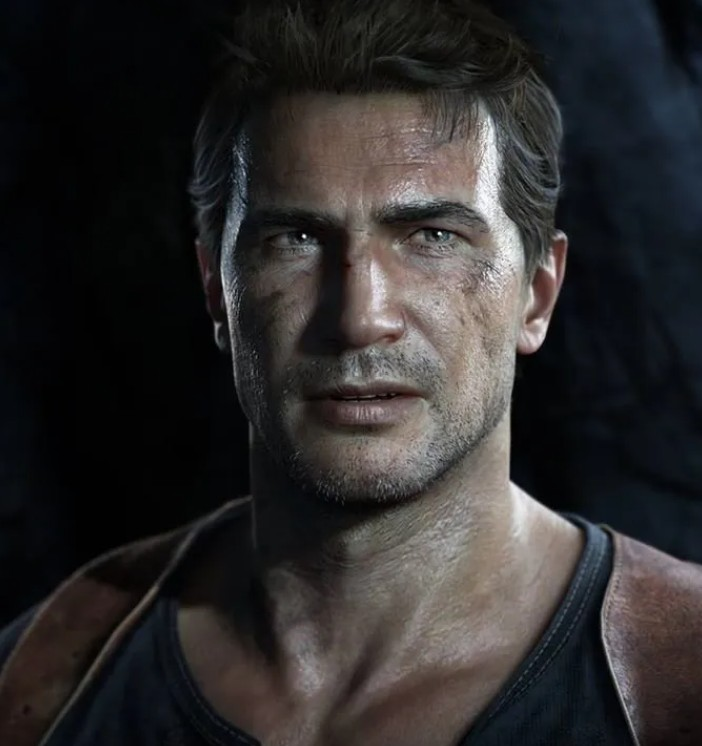
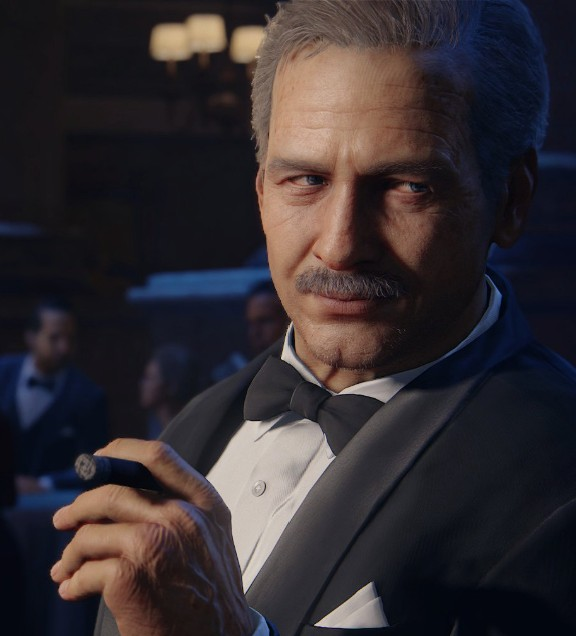
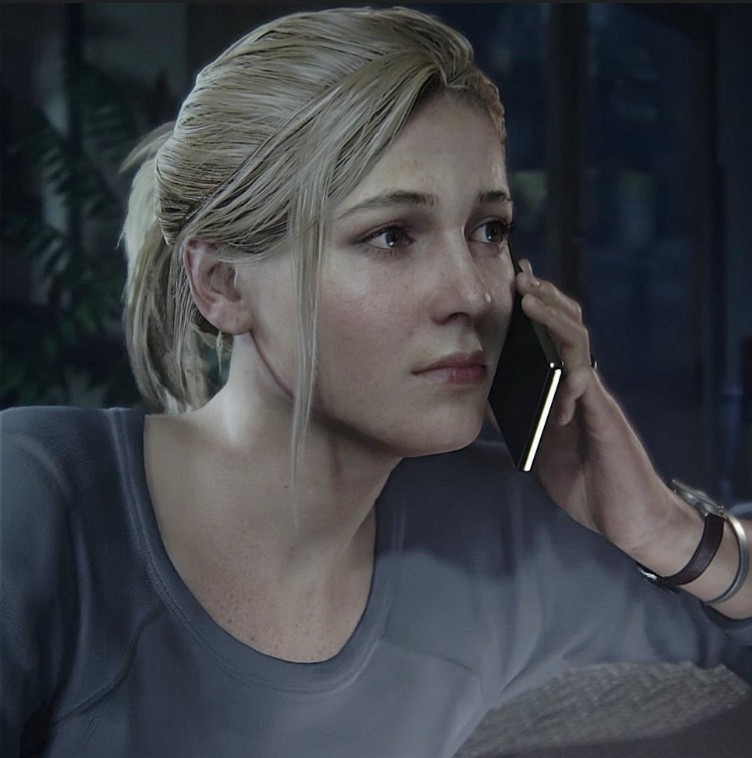
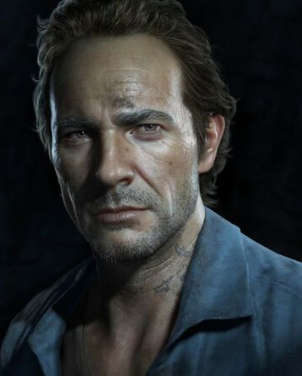
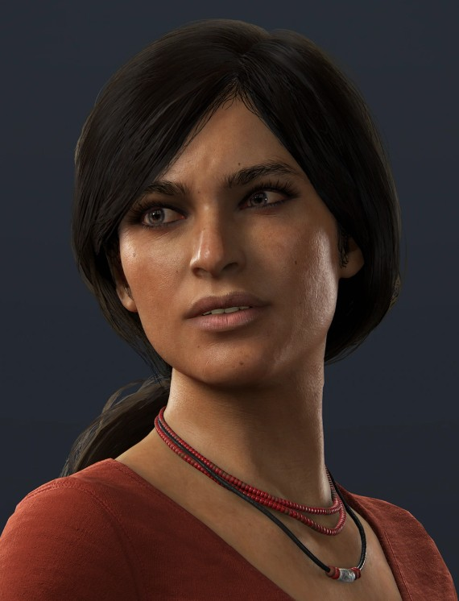
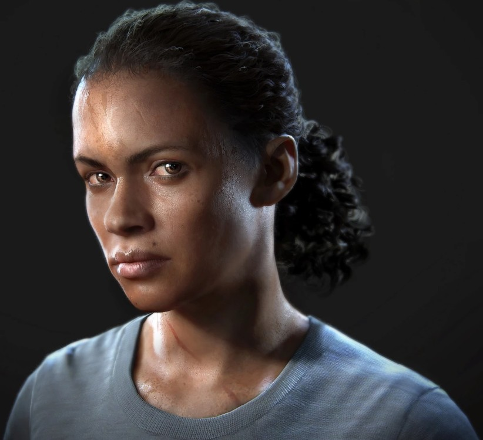
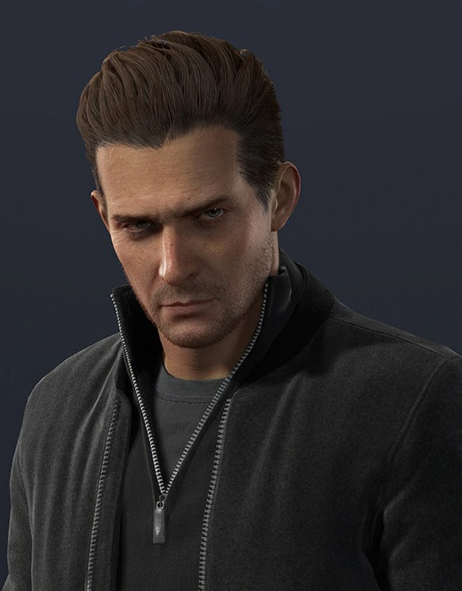
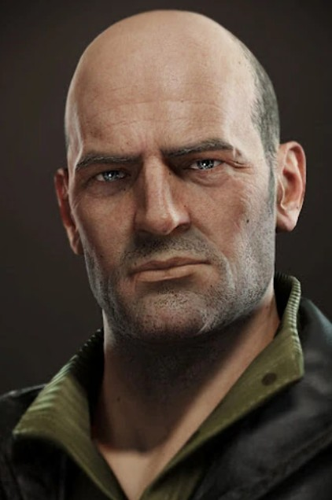

The wisecracking treasure hunter who claims descent from Sir Francis Drake. His charm and luck are exceeded only by his talent for surviving impossible situations.

The seasoned, cigar-chomping smuggler and treasure hunter who became a father figure to young Nathan Drake. Sully's experience has saved the crew from countless disasters.

The fearless journalist who evolved from skeptical documentarian to Nate's most capable partner. Her sharp mind and moral compass make her indispensable.

Nate's older brother, presumed dead for fifteen years. Sam's sudden reappearance throws Nate's settled life into chaos and pulls him back into the world he tried to leave.

Chloe Frazer
Australian thief and former partner of Nate's. Leads her own adventure in India recovering the Tusk of Ganesh.

Nadine Ross
Leader of private military company Shoreline. Formidable opponent who later becomes Chloe's reluctant ally.

Rafe Adler
A wealthy, obsessive treasure hunter whose craving for glory — not gold — drives him to desperate extremes.

Charlie Cutter
A British agent who appears first as an antagonist before revealing himself as an asset working with Sully.